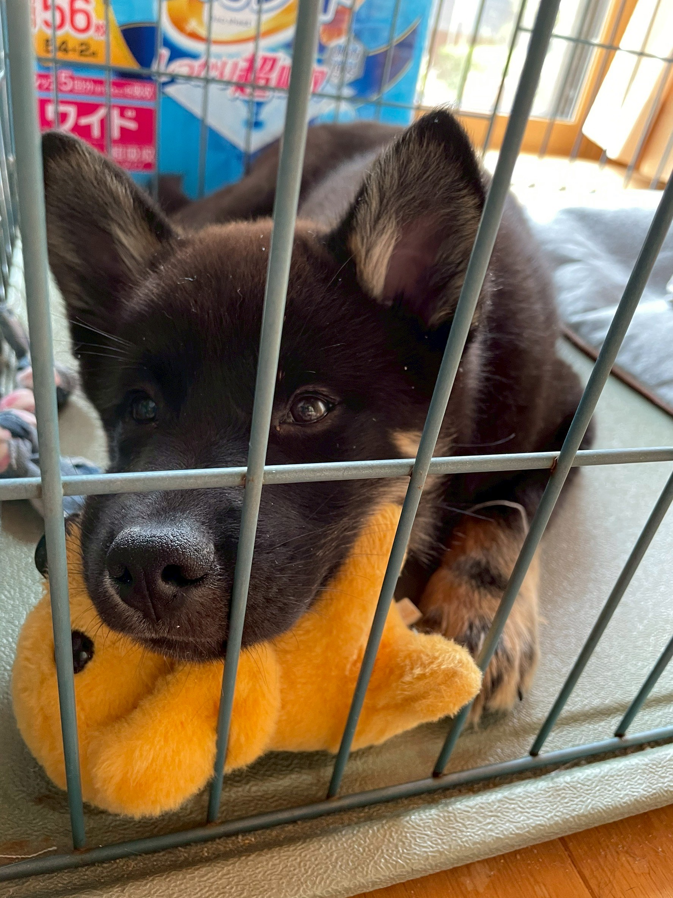
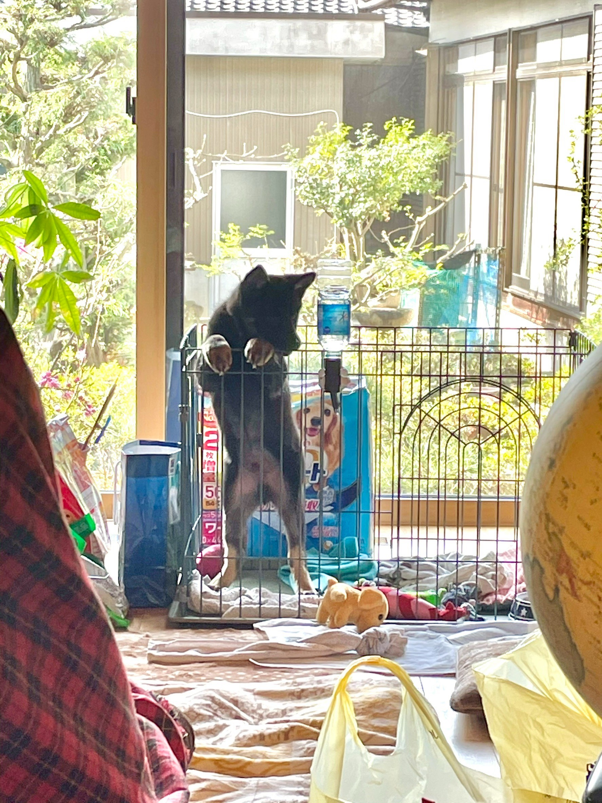
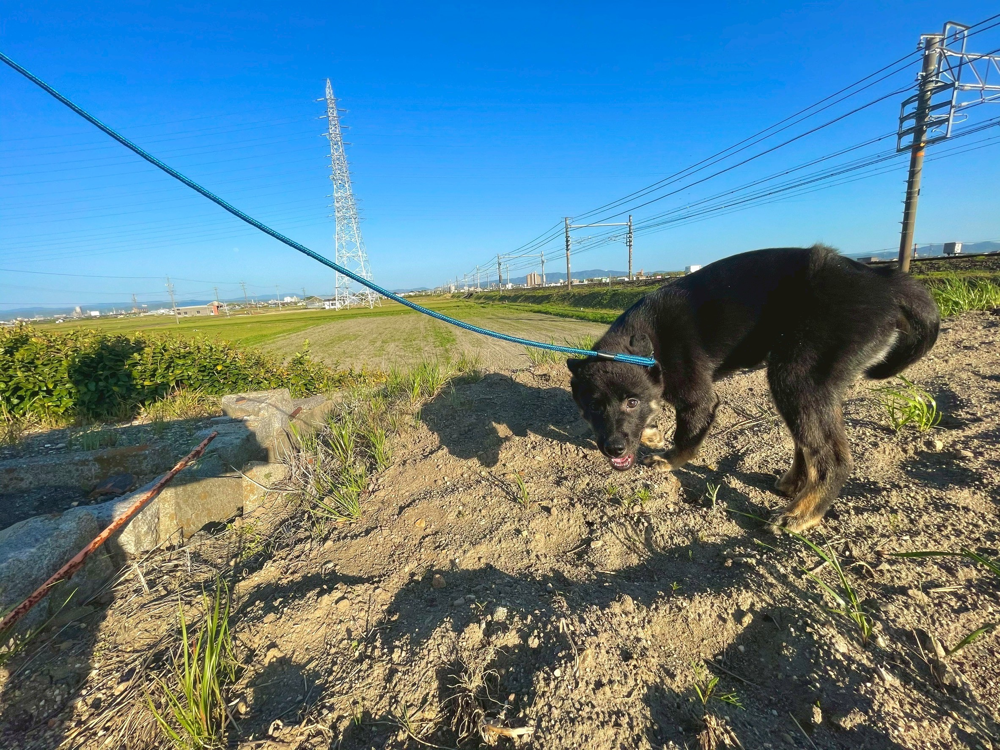
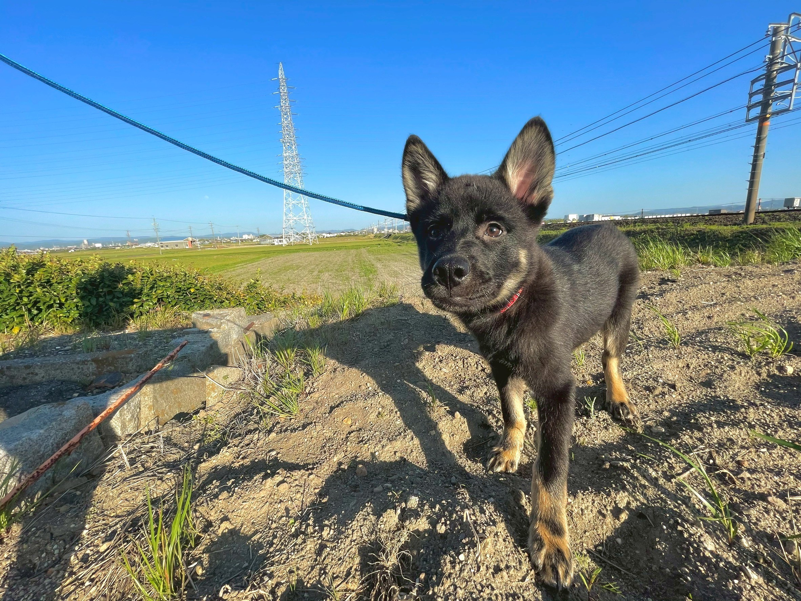
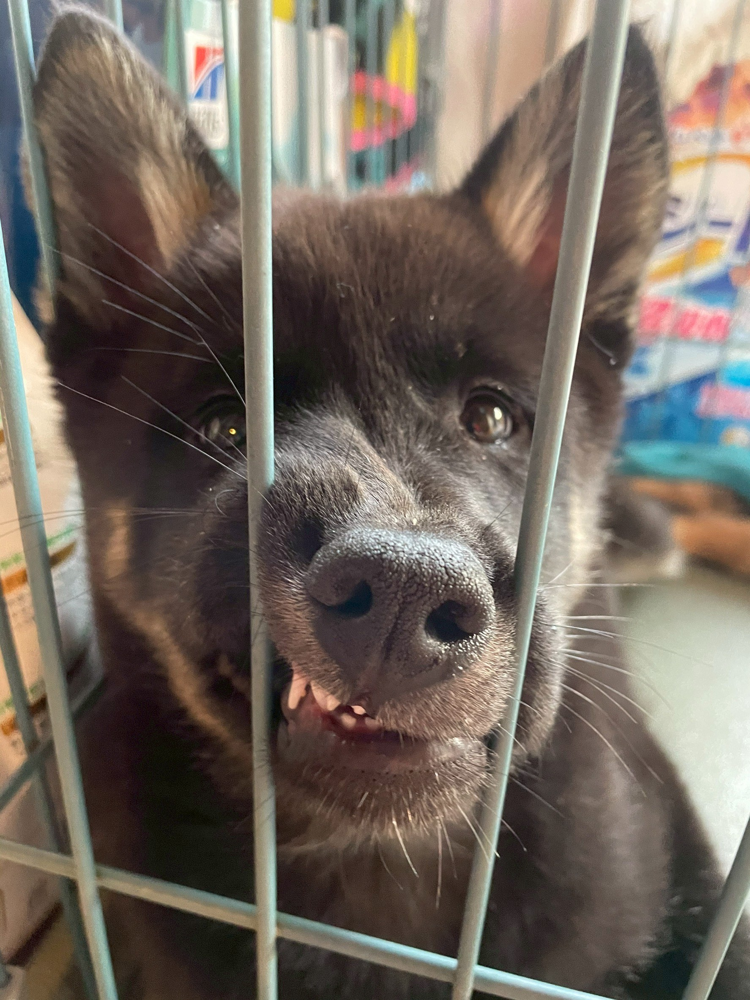
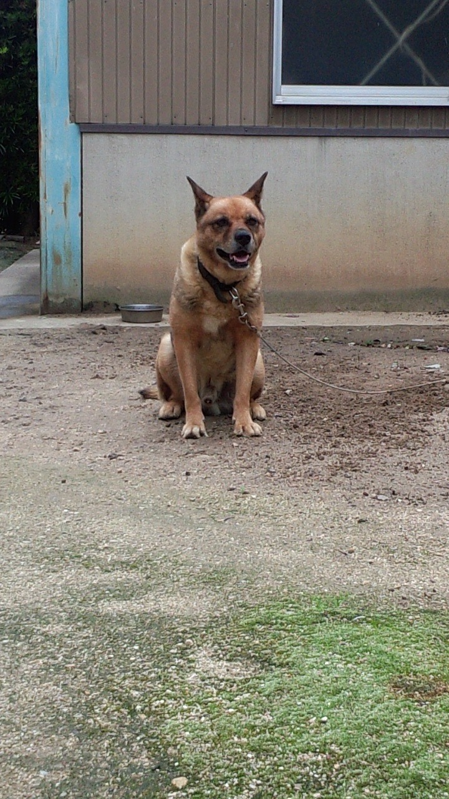
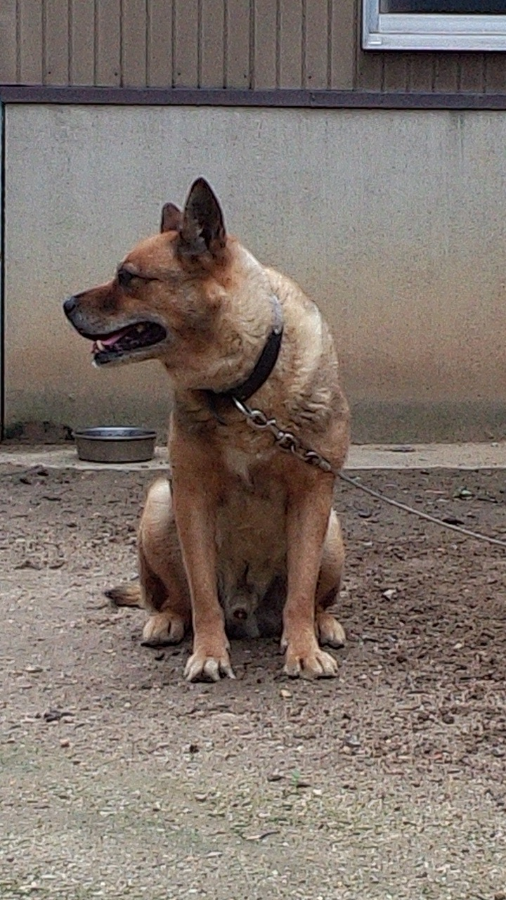
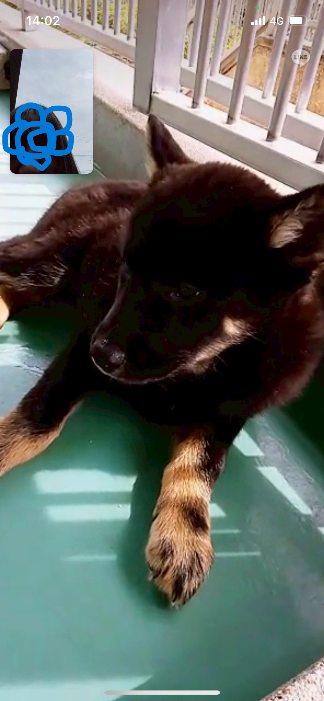

名犬！海苔兵衛
整備中です。下から時系列順になる予定です。
幼い海苔兵衛写真集
家族と撮りためた幼少海苔兵衛
   はじめてのお散歩
最初ははじめての場所に緊張していました
妹と私が楽しそうに走ったら、だんだん楽しい物だと認識してくれたて、
今ではよく走る子になりました。
お家に馴染んだ海苔兵衛２
写真は、はじめてお庭に出た海苔兵衛
野生出身なので、お外が落ち着くよね。
衝撃！寄生虫！
保護犬をこれから迎える人は知っておいた方が良いかも。 写真はお見せできないんですが、お迎えの3日後くらいに ほぼ寄生虫でできてるみたいな糞をしました。 予め保健所の方が虫下しの薬を摂取させてくれたらしくて、 虫が出ますよ。とは伝えられていました。 ただ、こんなに小さな犬の腸にあんなに大量の虫がいるとは思わなかったです。 白くて針金みたいな寄生虫がうんちに混じってるってかほぼそれみたいな。 一瞬白いうんちしたんかと思ってパニックでした。 ペットショップのワンちゃんならこんなことにはならないと思う。 そのキモい糞をつかんで捨てるのが私には苦行でした。 犬を野生からすぐ引き取る予定のある方、お気をつけて。
お家に馴染んだ海苔兵衛１
保健所からお家に向かう車では緊張で超小さく固まっていた海苔兵衛 でしたが、3日程で馴染んでリラックスするようになりました。
出会い
先住犬のクロちゃんが亡くなって、数カ月悲しみ、回復してきた頃、
私は犬がいない生活に耐えきれなくなりました。
最後の数か月間は介護状態でお家の中でお世話していました。
心に喪失感がありました。


クロちゃんと同じ雑種犬が飼いたくて、保健所の講習や手続きを進めました。
昔みたいにケージに入った沢山のワンちゃんから選ぶスタイルではなく、
保健所の方で飼い主候補者の希望する犬に近い犬が見つかったら順次電話を
かけてくれるシステムでした。
私は成犬でも何色でも良かったのですが、
「できれば大きくて黒い犬が良いです！」
とお伝えしました。
2021年3月保健所から、黒くて大きくなりそうな犬がいるので
見に来てください。と電話を頂きました。
もう喜んで見に行ったら、超ちびっちゃい黒い犬！当時7キロ。
緊張した顔で職員さんに抱っこされてました。
椅子に座った私に職員さんがその犬を渡してくれたんですが、
緊張で盛大に粗相。
獣医さんによる健康診断の書類をくれたのですが、”臆病”って書いてありました。
足が大きいから、体も大きくなるよ。保健所の方に言われました。
下の写真は、ビデオ通話で妹にも見てもらった時のスクショです。
こんな感じでひなの家に引き取られました。黒いから海苔兵衛と命名。
